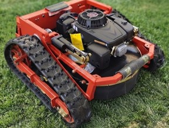
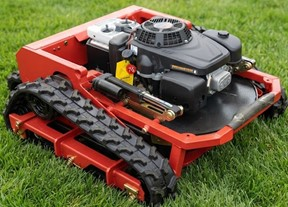

| 适合地形 Terrain Sesuai / Suitable Terrain |
斜坡、泥地 Cerun, tanah lembut Slopes, muddy ground |
| 特点 / Ciri / Features |
✅ 抓地力强，不易打滑 / Cengkaman kuat, tidak mudah tergelincir / Strong grip, less slipping ✅ 适合复杂 & 不平地形 / Sesuai untuk tanah tidak rata & kompleks / Ideal for rough & uneven terrain ✅ 多种动力选择，适合不同规模 / Banyak pilihan kuasa untuk pelbagai kegunaan / Multiple power options for different scales |
| 型号 / Model | HSH-CP955-PRO / HSH-CP955-PROMAX |
| 发动机功率（马力） Engine Power (HP) / Kuasa Enjin (HP) | 9HP |
| 发动机类型 Engine Type / Jenis Enjin | LONCIN |
| 割幅宽度 Cutting Width / Lebar Potongan | 550mm |
| 割草高度调节范围 Cutting Height Adjustment / Pelarasan Tinggi Potongan | 20mm - 140mm |
| 行走方式 Drive Type / Jenis Gerakan | TRACK |
| 最大爬坡能力 Max Climbing Ability / Keupayaan Mendaki Maksimum | 45° |
| 油箱容量 Fuel Tank Capacity / Kapasiti Tangki Minyak | 1.5L |
| 适用作业面积 / Suitable Working Area / Kawasan Kerja Sesuai | (P)2 to 3 acre (M)3 to 4 acre |
| 遥控距离 Remote Control Range / Jarak Kawalan Jauh | 200m |
| 机器重量 Machine Weight / Berat Mesin | 140kg |
| 外形尺寸 Dimensions (L×W×H) / Dimensi (P×L×H) | 860 × 880 × 420 |

